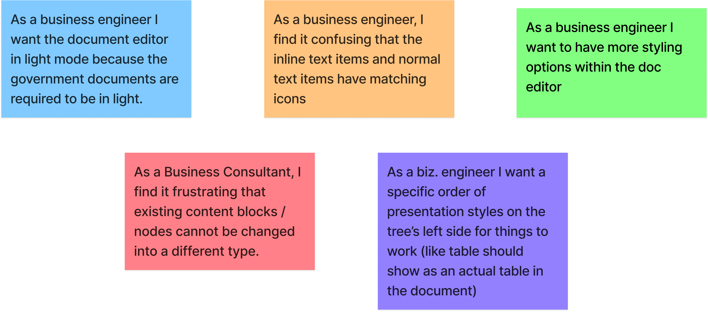
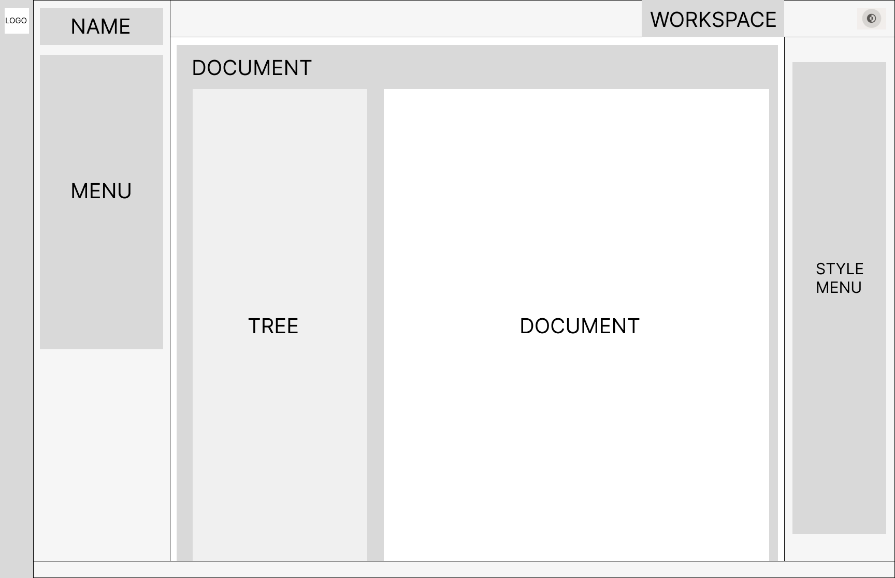

This project is was given to us by Fontys. We were tasked by Blueriq to redesign the document editor, Encore. Encore is the second version of their app; the first one was called Studio, but it's outdated. Now that they're migrating from Studio to Encore, they have been adding and removing features that are necessary to increase the usability. Blueriq asked us to asisst them with this journey by trying to improve the usability of the document editor to increase the user adoption of Blueriq Encore, and provide valuable insights and actionable recommendations to improve the usability of the document editor. So, the question is:
Which improvements are needed to increase the usability of the document editor?

I act as the user and observe my behaviour and attitude when using the document editor. After trying out the document editor, I will list the pains and gains and other insights I got.
Pains:
The blue bar (with Encore logo) wasted a lot of valuable space. Also, as the blue colour is very vibrant, it can distract users
Cannot open two documents simultaneously
Tree is too big, so you need to scroll to the right to access other buttons like presentation style
The button for condition looks like a calculator, not making any sense.
Needs image labelling for the button next to languages.
Gains:
when you highlight a text and/or a content in the tree, the contents of both the tree & the document got highlighted, ensuring clarity.
It seems that I experience more pains than gains when using the doc editor. I will see if the business engineers also feel the same way.
After knowing my take on the document editor, it's time for me to do 2 interviews with business engineers, asking their opinion on the doc editor. Here are the results.
Needs the ability to preview documents
Inserting images is a complicated task
Same icons for different functions (text & inline text item icons)
Needs document in light mode, since they're creating a document in the first place
Love when Encore highlights the dynamic attributes on preview with the green circle
Drag and drop function in the tree is nice
..and many more.
Point is, it seems that they have more negative thoughts than positive ones towards the document editor. With these in mind, we continue to do more research.
I researched this article on the Laws of UX to ensure good user experience when designing. These are the laws that are relevant in context to the document editor.
Laws of Similarity: Elements that are visually similar will be perceived as related.
Fitt’s law: The time to acquire a target is a function of the distance to and size of the target.
Parkinson’s Law: Any task will inflate until all of the available time is spent.
Jakob’s Law: users prefer your site to work the same way as all the other sites they already know.
I also took a page on UK's government's take on design principles. Here are some of them that stood out.
Do less. If there’s a reusable UI component in Encore that makes total sense, its better than reinventing the wheel everytime.
Do the hard work to make it simple. This is a big reason why we need AB testing; we designed multiple times just to see the best solution, even if there may not be a lot of difference in first glance.
Making it for everyone. Accessible design is good design. Everything we build should be as inclusive, legible and readable as possible.
NOT build websites. Even though Encore is accessible on the website, it’s still a service / tool for business engineers.
Be consistent, NOT uniform. We should use the same language and the same design patterns wherever possible.
I look for inspirations by analysing Blueriq’s competitors that are successful and see if they have good practices that I can follow to help enhance the user experience.
Deriving from me & my groupmates' interview and our own observations, we devised an empathy map to gain a deeper insight on the business engineers.

User stories consists of features explained from the perspective of the business engineers. They are derived from the empathy map above.
However, since this is a group project, I did not do every user story. Therefore I picked these user stories and design them later.
To note down the types of business engineers who might use Encore and benefit from our design, we created 3 personas based on prior research: Junior, Medior, and Senior level.

We drew a C4 model to communicate abstract ideas in Encore in a visual way and from different points of view. Since there's no coding involved, we don't draw the code diagram.

After knowing enough research, it's time to draw the wireframe, where I demonstrate the basic layout of our version of Encore.
Now that I know the layout of our design, it's time to put in the colours, features from the user stories, etc. Here is the version that will be delivered to Blueriq.
You can see that I base my design choices based on the literature study and the people I interviewed to validate them.
After I did this prototype, I combined my prototype with everyone else's prototypes. Now we can go to the next step: Testing.
Side note, I made another prototype where I redesigned the whole of Encore. But since Blueriq only wants us to focus on the document editor, I won't submit this prototype to them. But hopefully it still gives you an idea on my take on Encore, where I improve the UI and hopefully increasing the usability even more.

We first need to note down the time taken to do major tasks in Blueriq Encore's current document editor. We divide our group to 3 teams, each team testing 2 business engineers. Here are the average time taken to do the tasks by 6 business engineers.
We conducted A/B testing and Usability testing and compare the results with the current system. In conclusion, the duration of doing tasks in our designs vastly improved. While some task's success rates fall lower, in general they are higher, indicating that the usability has improved.
To conclude everything, we found out that a majority of the business engineers expressed more negative aspects both design and function wise than positive. After we knew their thoughts, we dived into research on the good practices and principles that make a good user experience, combined with analysing Blueriq’s direct and indirect competitors to see the aspects that make them do well. While keeping in mind these 3 important information, we designed an interactable prototype which is our proposed redesign of Encore’s document editor. This is then benchmarked with the current state of Encore, and as a result, we found out that by using our design filled with improvements, the business engineers can work with Encore with more flexibility, efficiency, and most importantly, increased usability with our design.